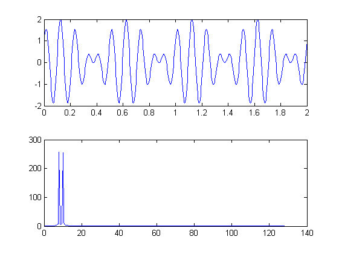

clear all; %清空内存 clc; %清屏 Fs = 256; %采样频率 Tp = 2; %采样持续时间 %原始信号 f1 = 10; %频率1 f2 = 8; %频率2 t = 0:1/Fs:Tp; %采样时间序列 L = length(t);%采样长度 Lf = ceil(L/2);%砍掉一半，因为有假频 figure(1); subplot(2,1,1); y=sin(2*pi*f1*t)+cos(2*pi*f2*t);%+cos(2*pi*50*t); %原始信号 plot(t,y) ;%画出原始信号 %fft变换 y_fft = fft(y); %快速傅氏变换 f=Fs/2*linspace(0,1,Lf);%取频率域横坐标 subplot(2,1,2); plot(f,abs(y_fft(1:Lf)));%画出频率域信号 % %其他的 % figure(2); % z = sin(2*pi*t) * abs(y_fft(1)); % for i=2:1:Lf, % y1 = sin(2*pi*t*i) * abs(y_fft(i)); % z = [z;y1]; % end % % % wigb(z',0.1); % %figure(3); % %plot(sum(z));